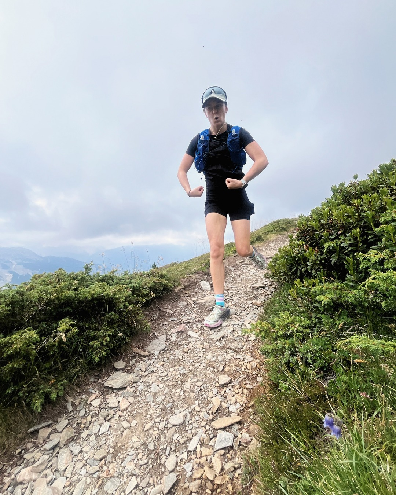
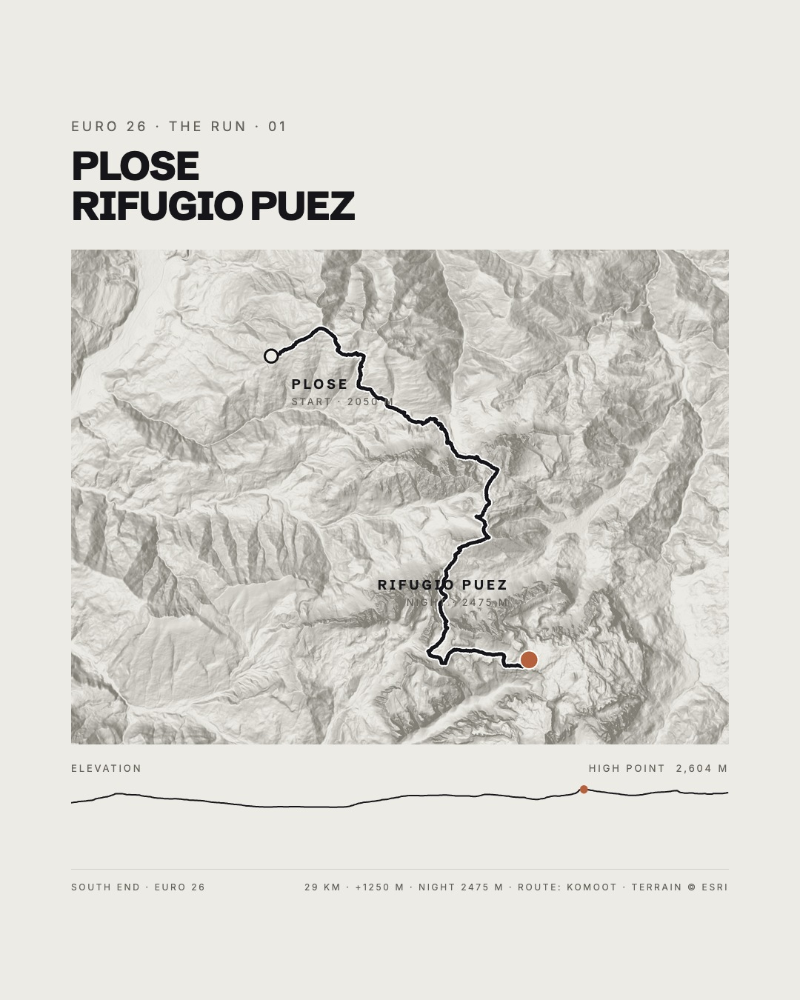

The Run · Stage 1 · Tuesday 14 July
Plose → Rifugio Puez
A gondola does the first 1,000 metres. Everything after that is earned.
Puez-Odle29kmDistance
+1,250mAscent
2,475mNight at
Bressanone
/
gondola ↑ Plose
/
Schlüterhütte
/
Rifugio Puez (2,475m)
Bus from Bressanone station to the gondola base, first cabin at 8:45, free on the Brixen guest card. Running starts at the top station, around 2,050m.
The Seceda ridgeline opens up almost immediately, and the Odle stay on your shoulder for most of the day.
Night at Rifugio Puez, 2,475m.
